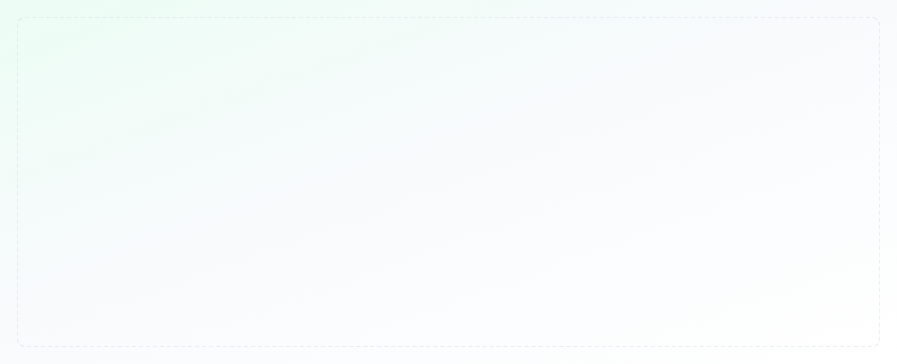
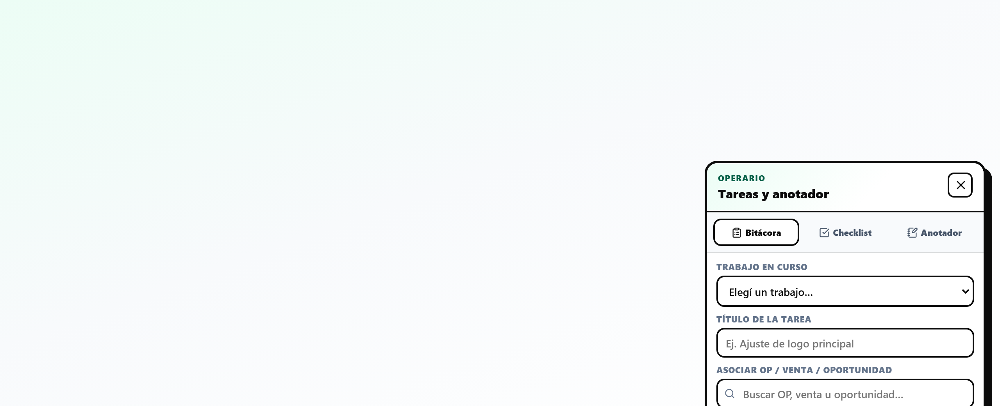
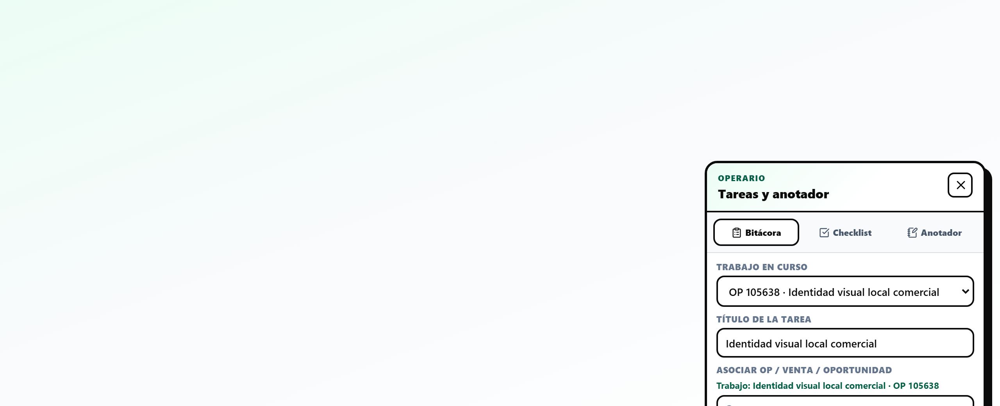
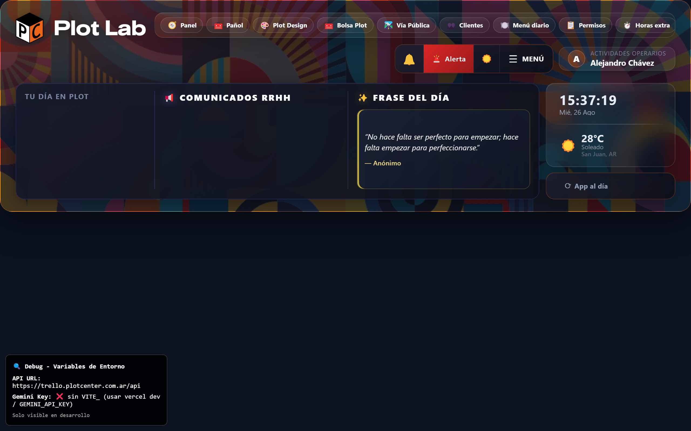
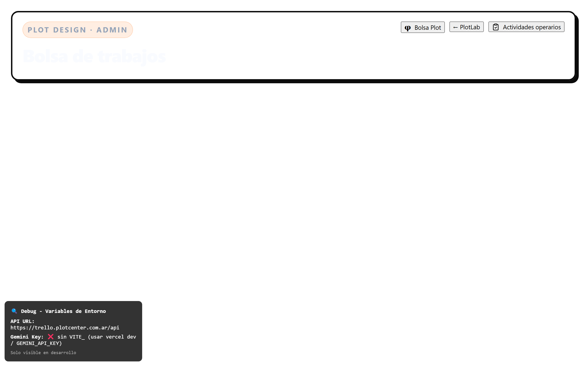
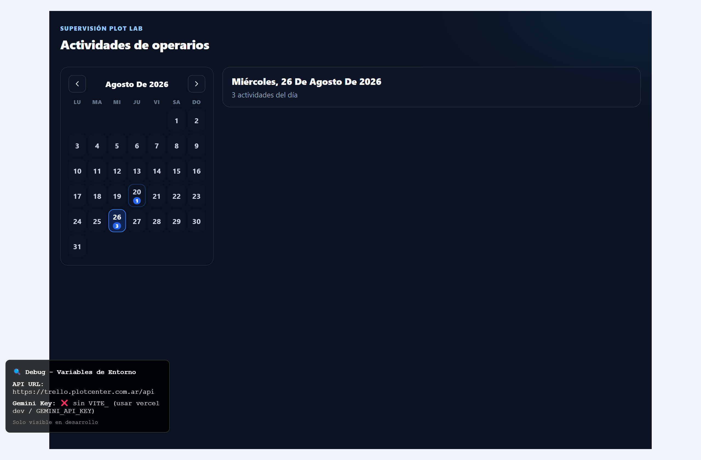
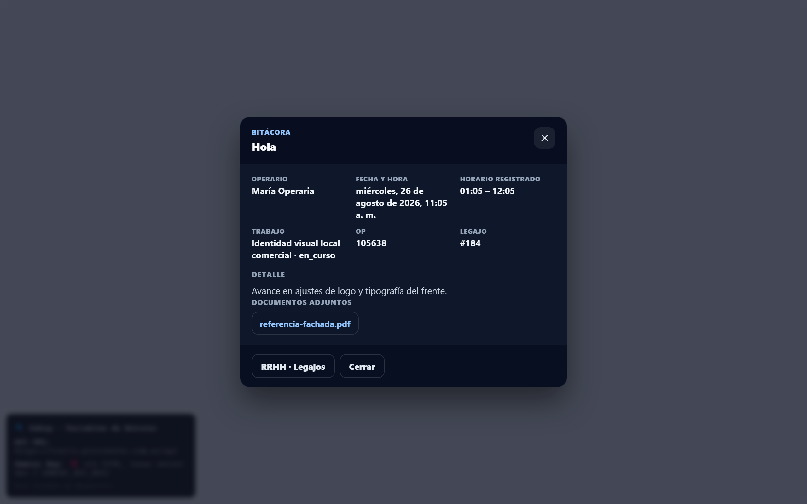
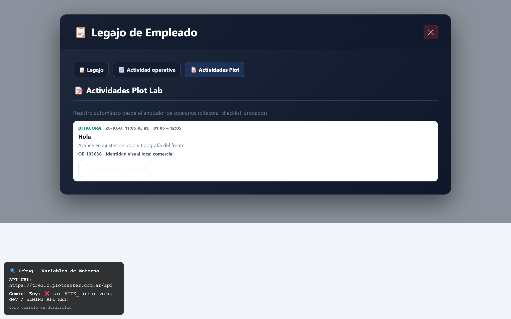

Bitácora, tareas y supervisión de operarios
Guía de implementación Plot Lab — lado operario (anotador flotante) y lado admin/gerencia (panel de actividades + legajo RRHH).
Cada operario registra en un botón flotante (bitácora, checklist, anotador) lo que hace en el día, con título de tarea, horario y adjuntos. Admin y gerencia ven todo en /actividades-operarios con calendario, estadísticas, modal de detalle y enlace al legajo del empleado.
1. Lado operario — Anotador flotante (FAB)
Panel externo Plot Design (/operario-externo/diseno), vista operario interna, tablero principal (BoardPage) y admin Plot Design cuando el usuario es operario asignado.
1.1 Botón flotante
Esquina inferior derecha. Icono de cuaderno; al abrirlo muestra el panel «Tareas y anotador».

- ① Botón FAB — Siempre visible mientras el operario navega; no tapa acciones críticas en móvil (sube un poco en pantallas chicas).
- ② Al hacer clic se abre el panel; el botón pasa a icono ✕ para cerrar.
1.2 Tres pestañas
| Pestaña | Uso | Datos que guarda |
|---|---|---|
| Bitácora | Registro de trabajo hecho en un job/OP | Detalle, título, job, OP/venta, horario, adjuntos (PDF, imágenes, etc.) |
| Checklist | Tareas pendientes del día | Título (= texto de la tarea), marcable como hecho, horario opcional |
| Anotador | Notas libres | Texto + horario opcional, sin obligación de OP |

- ① Bitácora — Requiere asociar un trabajo en curso o buscar OP/venta/oportunidad.
- ② Checklist — Lista de tareas del día; checkbox integrado en cada ítem.
- ③ Anotador — Notas rápidas sin amarrar a un job.
1.3 Formulario de alta (composer)

- ① Trabajo en curso — Lista de jobs activos (asignado, en curso, cambios, entregado, en revisión). Muestra OP · título del trabajo.
- ② Título de la tarea — Se autocompleta al elegir un job; el operario puede editarlo. Queda guardado en la base como
titulo. - ③ Asociar OP / venta / oportunidad — Búsqueda opcional si no hay job; debajo aparece hint con el trabajo seleccionado.
- ④ Qué hiciste — Texto principal de la bitácora (
detalle). - ⑤ Hora inicio / fin — Registro de horario del día (validación: fin > inicio).
- ⑥ Documentos adjuntos — Solo en bitácora; sube a Storage
archivos/work-pool-bitacora/. - ⑦ Agregar — Crea la nota vía RPC
work_pool_operario_nota_crear.
1.4 Lista del día
Debajo del formulario solo se listan entradas de hoy (zona horaria Argentina), con contador «Hoy · N entradas».

- ① Encabezado Hoy · N entradas — Filtro local con
isoToArgentinaDateKey. - ② Cada ítem muestra título, detalle, hora registrada y chips de asociación.
- ③ En checklist: icono checkbox para marcar hecho (toggle en servidor).
- ④ Adjuntos aparecen como links descargables bajo el texto.
2. Lado admin / gerencia — Supervisión
Roles: administración, admin, gerencia, y supervisión designada (Alejandro Chávez, usuario id 6). Ruta: /actividades-operarios
2.1 Cómo llegar al panel
| Acceso | Ubicación en UI |
|---|---|
| Header tablero | Chip usuario «Actividades operarios» (arriba derecha) o botón rápido Actividades en la barra de navegación |
| Plot Design admin | /plot-design → botón Actividades operarios junto a «← PlotLab» |
| URL directa | https://www.plotcenterlab.com.ar/actividades-operarios |

- ① Chip de usuario clickeable — Lleva al panel de supervisión.
- ② Botón Actividades en accesos rápidos (admin/gerencia).

- ① Atajo desde administración de bolsa creativa sin volver al tablero.
2.2 Panel principal — Calendario y día seleccionado

- ① Calendario mensual — Días con actividad muestran badge numérico; clic cambia el día filtrado.
- ② Ir a hoy — Vuelve al día actual (Argentina).
- ③ Estadísticas — KPIs 7/30/90 días: totales, checklist %, tiempo registrado, gráfico por día.
- ④ Filtros — Operario, tipo (bitácora/checklist/anotador), búsqueda texto.
- ① Encabezado del día — «miércoles, 26 de agosto…» + chips bitácora/checklist/anotador.
- ② Tarjeta por operario — Nombre, Legajo #id, botón Ver legajo.
- ③ Cada fila es clickeable → abre modal de detalle.
- ④ Datos cargados vía RPC
work_pool_operario_notas_supervisioncon filtrop_fecha.
2.3 Modal de detalle

- ① Muestra todos los campos: operario, fecha/hora, horario registrado, job, OP, venta, legajo.
- ② Lista de adjuntos con link directo al archivo en Storage.
- ③ Ver legajo — Abre modal RRHH en pestaña Actividades Plot.
- ④ Link a /rrhh/usuarios para gestión de legajos.
En la ficha de un trabajo (WorkPoolJobDetalleModal), sección Bitácora del operario: muestra notas del job con horario y adjuntos — útil al revisar entregas.
3. Legajo RRHH — Actividades Plot
Las actividades del operario quedan vinculadas por id_usuario y se consultan desde el legajo del empleado.

- ① Acceso: RRHH → Usuarios → Ver legajo, o desde supervisión → Ver legajo.
- ② Pestaña 📝 Actividades Plot — Lista bitácora/checklist/anotador del empleado.
- ③ RPC
work_pool_operario_notas_legajo(permiso RRHH, gerencia o supervisión Plot). - ④ Link «Panel de supervisión» para volver a /actividades-operarios.
4. Referencia técnica
4.1 Rutas y archivos principales
| Área | Ruta / archivo |
|---|---|
| Panel supervisión | src/pages/ActividadesOperariosPage.tsx |
| Calendario | src/features/work-pool/ActividadesOperariosCalendario.tsx |
| Modal detalle admin | src/features/work-pool/ActividadOperarioDetalleModal.tsx |
| FAB operario | src/features/work-pool/WorkPoolOperarioNotasFab.tsx |
| API / RPC cliente | src/features/work-pool/workPoolOperarioNotas.ts |
| Legajo — tab Plot | src/components/LegajoActividadesPlotPanel.tsx + VerLegajoModal.tsx |
| Accesos admin | Header.tsx, headerQuickNav.ts, WorkPoolAdminPanel.tsx |
4.2 Base de datos (Supabase)
| Elemento | Descripción |
|---|---|
Tabla work_pool_operario_notas | Campos: tipo, titulo, detalle, hecho, id_job, OP/venta/opp, adjuntos (jsonb), hora_inicio, hora_fin, timestamps |
work_pool_operario_nota_crear | Alta con validación de job asignado y adjuntos solo en bitácora |
work_pool_operario_nota_listar | Listado del operario (por tipo / job) |
work_pool_operario_notas_supervision | Listado admin con p_fecha, id_legajo |
work_pool_operario_notas_estadisticas | KPIs por período, operario y día |
work_pool_operario_notas_legajo | Historial para pestaña RRHH |
Patches SQL en supabase/patches/2026-08-26_work_pool_operario_notas_*.sql
4.3 Flujo de datos (resumen)
- Operario completa FAB → Storage (adjuntos) + RPC crear → fila en
work_pool_operario_notas. - Si es bitácora con job → evento en
work_pool_job_eventstiponota. - Admin abre supervisión → RPC con fecha del calendario → tarjetas + stats.
- Clic en entrada → modal; «Ver legajo» →
VerLegajoModalpestaña Actividades Plot.
5. Capturas incluidas y cómo regenerarlas
Las 10 capturas (01-fab-boton.png … 10-legajo-tab.png) están en docs/img/bitacora-operarios/ y se muestran arriba en este documento.